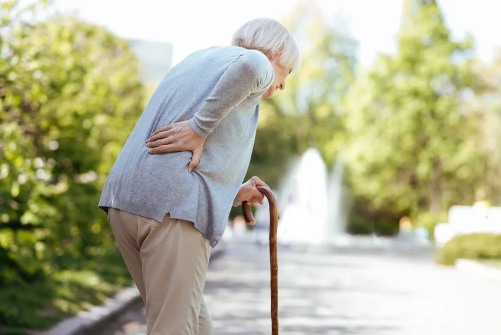

Sarcopenia: What Is It and How Can Seniors Prevent It?

As people age, they may feel like they aren’t quite as strong as they once were. It’s likely because of a condition called sarcopenia. This disease affects older adults and causes muscle loss. Some muscle loss is inevitable, but there are steps you can take to prevent or even reverse it to a certain degree.
If you are feeling weaker or more fragile in your older age, it’s time to consider sarcopenia and what you can do about it. Read on in this article to learn more about this disease and the steps you can take to regain some of that lost muscle to lead a healthy and active life.
What is Sarcopenia?
Sarcopenia directly translates to “loss of flesh.” It’s a common condition that affects 10-percent of people over the age of 50 years reports Healthline . The source continues to say, “After middle age, adults lose 3-percent of their muscle strength every year, on average. This limits their ability to perform many routine activities.” Sarcopenia can shorten life expectancy when compared to people without the disease.
According to Healthline , “sarcopenia is caused by an imbalance between signals for muscle cell growth and signals for teardown. Cell growth processes are called “anabolism,” and cell teardown processes are called “catabolism.” As the body ages, it becomes resistant to the growth signals which causes more muscle loss through catabolism.
Signs of Sarcopenia
The primary sign of sarcopenia is a decrease in muscle strength. You might feel tired or weaker during normal activities and when you are lifting heavy items. Weakness and fatigue are very general signs and can be attributed to many conditions, making it hard to diagnose sarcopenia from only this one symptom.
Other signs of sarcopenia include “walking more slowly, becoming exhausted more easily, and having less interest in being active. Losing weight without trying can also be a sign of sarcopenia” says Healthline . If you have marked changes in your energy levels or lose weight without trying, it’s time to make a phone call to your doctor’s office. These signs are not normal and need to be investigated.
What Causes Sarcopenia?
Seniors experience so many different changes as they age. Sarcopenia might be common, but it’s often one change that older people just don’t expect to happen. As we age, our body doesn’t produce as many muscle fibers and the size of the muscle fibers decreases overtime. This causes the decrease in strength that older individuals experience.
On the cellular level, your body makes the proteins that your muscles need to grow. According to Medical News Today , that protein production declines as we age. The source adds, “Age-related hormonal changes may also lead to a decrease in muscle mass. Typically, levels of testosterone and hormones that regulate glucose-like growth factor (IGF-1) affect muscle growth and muscle mass.”
Prevention: Active Lifestyle
When it comes to sarcopenia, prevention is key. Maintaining an active lifestyle can slow the loss of muscle and help you keep up with your activities. Not using your muscles “is one of the strongest triggers of sarcopenia…” reports Healthline . The source continues to say that “two to three weeks of decreased walking and other regular activity is also enough to decrease muscle mass and strength.”
Make a point to get out every day to exercise or go for a walk. The consistent movement will not only keep your muscles strong but also your bones strong. Exercise has a well documented positive effect on mental health as well. If you can, combine aerobic exercise with strength training. Start slowly and work with a trainer if you have questions. Sometimes inactivity can’t be avoided. If you are on bed rest or cannot move for a period of time due to illness work with your doctor or physical therapist to get yourself safely moving again.
Prevention: Healthy Diet
A healthy diet is important for your body at every stage of your life. But it turns out it’s particularly important for older adults to eat the right amount of calories and protein to prevent weight loss and decreased muscle mass. According to Healthline, “…low-calorie and low-protein diets become more common with aging, due to changes in sense of taste, problems with the teeth, gums and swallowing, or increased difficulty shopping and cooking.”
The average adult needs 0.8-grams of protein per kilogram (gm/kg) of body weight every day. But older adults with sarcopenia need 1.2- to 1.5-grams per kilogram of protein per day reports the AARP . It’s also important to eat the right kind of protein continues the source. The amino acid leucine has been shown to preserve body muscle. It’s found in animal products like meat, milk, and eggs.
Prevention: Reduce Inflammation
Inflammation is the body’s way of removing bad or damaged cells. But, when inflammation is chronic or continues for a long period of time, it can work against you and result in muscle loss. Healthline reports that patients with chronic inflammation due to conditions, such as chronic obstructive pulmonary disease (COPD) also had lower levels of muscle mass and those with higher than normal levels of C-reactive protein (CRP) had a higher likelihood of developing sarcopenia.
Reducing inflammation can be tricky. The inflammatory process is intended to keep you healthy so you’ll never be able to remove all inflammation all the time. If you suffer from chronic conditions that cause inflammation will need to be treated to the best of your and your doctor’s ability. Managing your stress levels and eating a healthy diet can also keep inflammation down.
Prevention: Manage Chronic Conditions
As we mentioned above, chronic conditions play a huge part in our overall health, especially inflammation and how it relates to sarcopenia. Not surprisingly, sarcopenia is more common in people who have health conditions that cause an increase of stress and inflammation within the body. “For example, people with chronic liver disease and up to 20-percent of people with chronic heart failure experience sarcopenia,” reports Healthline .
The best thing you can do is see your doctor regularly for appointments and to follow their instructions on managing your chronic conditions. Now is not the time to stop taking medications or miss procedures and appointments. Losing muscle mass may sound like the least of your problems but it becomes a slippery slope that leads to numerous other symptoms and diseases. Stop it today and work on becoming as healthy as you can.
Source: https://activebeat.com/your-health/sarcopenia-what-is-it-and-how-can-seniors-prevent-it/